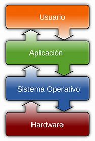
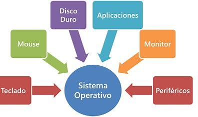
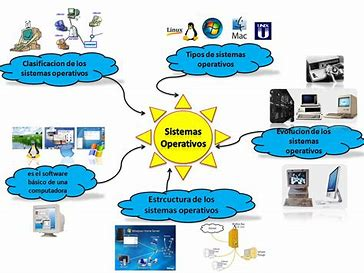
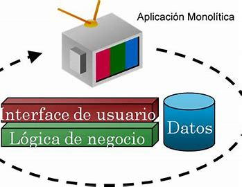
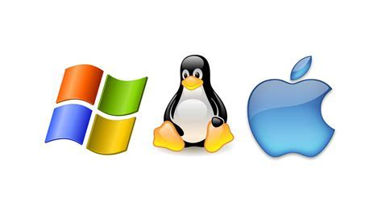

El sistema operativo administra los recursos ofrecidos por el hardware y actúa como un intermediario entre la computadora y su usuario. Además proporciona
ambiente en donde el usuario pueda ejecutar programas en una forma conveniente
y eficiente.

Tema 1.1:
¿Que es un sistema Operativo?
Ver más

Tema 1.2:
Características de los Sistemas Operativos
Ver más

Tema 1.3:
Historia de los Sistemas Operativos
Ver más

Tema 1.4:
Conceptos Básicos de un Sistema Operativo
Ver más

Tema 1.5:
Estructura de los Sistemas Operativos
Ver más

Tema 1.6:
Principales Aspectos del Hardware de Importancia para los Sistemas Operativos
Ver más

Tema 1.7:
Software más Destacados en Relacion a los Sistemas Operativos
Ver más